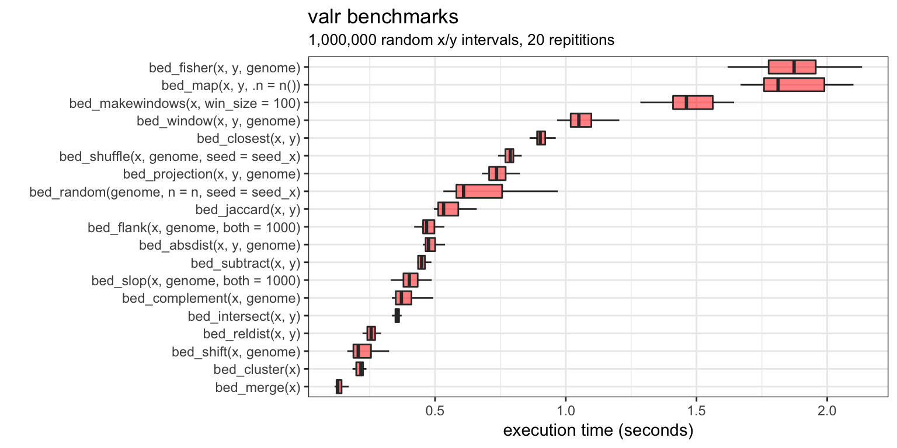

#> setting value
#> version R version 3.4.3 (2017-11-30)
#> system x86_64, darwin17.3.0
#> ui unknown
#> language (EN)
#> collate en_US.UTF-8
#> tz America/Denver
#> date 2018-03-23
#>
#> package * version date
#> assertthat 0.2.0 2017-04-11
#> backports 1.1.2 2017-12-13
#> base * 3.4.3 2018-01-13
#> bindr 0.1.1 2018-03-13
#> bindrcpp * 0.2 2017-06-17
#> broom 0.4.3 2017-11-20
#> colorspace 1.3-2 2016-12-14
#> commonmark 1.4 2017-09-01
#> compiler 3.4.3 2018-01-13
#> crayon 1.3.4 2018-02-26
#> datasets * 3.4.3 2018-01-13
#> desc 1.1.1 2017-08-03
#> devtools * 1.13.5 2018-02-18
#> digest 0.6.15 2018-01-28
#> dplyr * 0.7.4 2017-09-28
#> evaluate 0.10.1 2017-06-24
#> foreign 0.8-69 2017-06-22
#> fs 1.2.1 2018-03-20
#> ggplot2 * 2.2.1.9000 2018-02-21
#> glue 1.2.0 2017-10-29
#> graphics * 3.4.3 2018-01-13
#> grDevices * 3.4.3 2018-01-13
#> grid 3.4.3 2018-01-13
#> gtable 0.2.0 2016-02-26
#> hms 0.4.2 2018-03-10
#> htmltools 0.3.6 2017-04-28
#> knitr 1.20 2018-02-20
#> labeling 0.3 2014-08-23
#> lattice 0.20-35 2017-03-25
#> lazyeval 0.2.1 2017-10-29
#> magrittr 1.5 2014-11-22
#> MASS 7.3-49 2018-02-23
#> memoise 1.1.0 2017-04-21
#> methods * 3.4.3 2018-01-13
#> microbenchmark * 1.4-4 2018-01-24
#> mnormt 1.5-5 2016-10-15
#> munsell 0.4.3 2016-02-13
#> nlme 3.1-131.1 2018-02-16
#> parallel 3.4.3 2018-01-13
#> pillar 1.2.1 2018-02-27
#> pkgconfig 2.0.1 2017-03-21
#> pkgdown 0.1.0.9000 2018-03-23
#> plyr 1.8.4 2016-06-08
#> psych 1.7.8 2017-09-09
#> purrr 0.2.4 2017-10-18
#> R6 2.2.2 2017-06-17
#> Rcpp 0.12.16 2018-03-13
#> readr 1.1.1 2017-05-16
#> reshape2 1.4.3 2017-12-11
#> rlang 0.2.0.9000 2018-03-16
#> rmarkdown 1.9 2018-03-01
#> roxygen2 6.0.1 2017-02-06
#> rprojroot 1.3-2 2018-01-03
#> rstudioapi 0.7.0-9000 2018-03-16
#> scales * 0.5.0 2017-08-24
#> stats * 3.4.3 2018-01-13
#> stringi 1.1.7 2018-03-12
#> stringr 1.3.0 2018-02-19
#> tibble * 1.4.2 2018-01-22
#> tidyr 0.8.0 2018-01-29
#> tools 3.4.3 2018-01-13
#> utils * 3.4.3 2018-01-13
#> valr * 0.4.0 2018-01-25
#> withr 2.1.2 2018-03-15
#> xml2 1.2.0 2018-01-24
#> yaml 2.1.18 2018-03-08
#> source
#> CRAN (R 3.4.0)
#> CRAN (R 3.4.3)
#> local
#> CRAN (R 3.4.3)
#> CRAN (R 3.4.3)
#> CRAN (R 3.4.2)
#> CRAN (R 3.4.0)
#> CRAN (R 3.4.1)
#> local
#> Github (r-lib/crayon@95b3eae)
#> local
#> cran (@1.1.1)
#> CRAN (R 3.4.3)
#> CRAN (R 3.4.3)
#> CRAN (R 3.4.1)
#> CRAN (R 3.4.0)
#> CRAN (R 3.4.3)
#> cran (@1.2.1)
#> local
#> CRAN (R 3.4.2)
#> local
#> local
#> local
#> CRAN (R 3.4.0)
#> CRAN (R 3.4.3)
#> CRAN (R 3.4.0)
#> CRAN (R 3.4.3)
#> CRAN (R 3.4.0)
#> CRAN (R 3.4.3)
#> CRAN (R 3.4.2)
#> CRAN (R 3.4.0)
#> CRAN (R 3.4.3)
#> CRAN (R 3.4.0)
#> local
#> CRAN (R 3.4.3)
#> CRAN (R 3.4.0)
#> CRAN (R 3.4.0)
#> CRAN (R 3.4.3)
#> local
#> CRAN (R 3.4.3)
#> CRAN (R 3.4.0)
#> local
#> CRAN (R 3.4.0)
#> CRAN (R 3.4.1)
#> cran (@0.2.4)
#> CRAN (R 3.4.0)
#> CRAN (R 3.4.3)
#> CRAN (R 3.4.0)
#> CRAN (R 3.4.3)
#> Github (tidyverse/rlang@1b81816)
#> CRAN (R 3.4.3)
#> cran (@6.0.1)
#> CRAN (R 3.4.3)
#> Github (rstudio/rstudioapi@423d925)
#> CRAN (R 3.4.1)
#> local
#> CRAN (R 3.4.3)
#> CRAN (R 3.4.3)
#> CRAN (R 3.4.3)
#> CRAN (R 3.4.3)
#> local
#> local
#> CRAN (R 3.4.3)
#> CRAN (R 3.4.3)
#> CRAN (R 3.4.3)
#> CRAN (R 3.4.3)